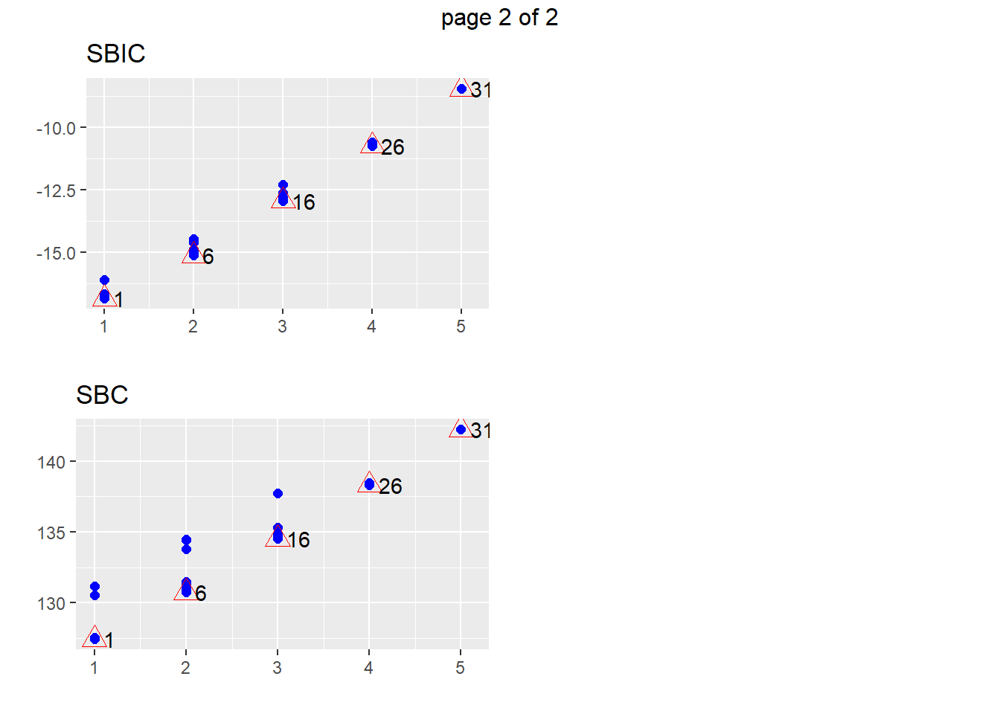
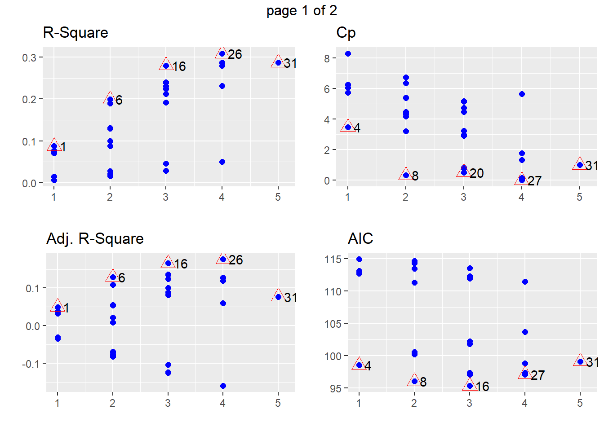

youtube
StephanLewandowsky
2019-12-31
Last updated: 2020-01-01
Checks: 6 1
Knit directory: MuhsinPhase1/
This reproducible R Markdown analysis was created with workflowr (version 1.4.0). The Checks tab describes the reproducibility checks that were applied when the results were created. The Past versions tab lists the development history.
Great! Since the R Markdown file has been committed to the Git repository, you know the exact version of the code that produced these results.
The global environment had objects present when the code in the R Markdown file was run. These objects can affect the analysis in your R Markdown file in unknown ways. For reproduciblity it’s best to always run the code in an empty environment. Use wflow_publish or wflow_build to ensure that the code is always run in an empty environment.
The following objects were defined in the global environment when these results were created:
| Name | Class | Size |
|---|---|---|
| data | environment | 56 bytes |
| env | environment | 56 bytes |
The command set.seed(20191231) was run prior to running the code in the R Markdown file. Setting a seed ensures that any results that rely on randomness, e.g. subsampling or permutations, are reproducible.
Great job! Recording the operating system, R version, and package versions is critical for reproducibility.
Nice! There were no cached chunks for this analysis, so you can be confident that you successfully produced the results during this run.
Great job! Using relative paths to the files within your workflowr project makes it easier to run your code on other machines.
Great! You are using Git for version control. Tracking code development and connecting the code version to the results is critical for reproducibility. The version displayed above was the version of the Git repository at the time these results were generated.
Note that you need to be careful to ensure that all relevant files for the analysis have been committed to Git prior to generating the results (you can use wflow_publish or wflow_git_commit). workflowr only checks the R Markdown file, but you know if there are other scripts or data files that it depends on. Below is the status of the Git repository when the results were generated:
Ignored files:
Ignored: .Rhistory
Ignored: .Rproj.user/
Untracked files:
Untracked: data/IslamophobiaSPSSDATA.sav
Untracked: data/RadicalisationSPSS.sav
Note that any generated files, e.g. HTML, png, CSS, etc., are not included in this status report because it is ok for generated content to have uncommitted changes.
These are the previous versions of the R Markdown and HTML files. If you’ve configured a remote Git repository (see ?wflow_git_remote), click on the hyperlinks in the table below to view them.
| File | Version | Author | Date | Message |
|---|---|---|---|---|
| Rmd | 7007bab | StephanLewandowsky | 2020-01-01 | wflow_publish(c(“analysis/index.Rmd”, “analysis/youtube.Rmd”)) |
| html | de51058 | StephanLewandowsky | 2020-01-01 | Build site. |
| Rmd | ef60d80 | StephanLewandowsky | 2020-01-01 | wflow_publish(c(“analysis/index.Rmd”, “analysis/youtube.Rmd”)) |
| html | 73cc888 | StephanLewandowsky | 2020-01-01 | Build site. |
| Rmd | 0137833 | StephanLewandowsky | 2020-01-01 | wflow_publish(c(“analysis/index.Rmd”, “analysis/youtube.Rmd”)) |
| html | ae6e0f8 | StephanLewandowsky | 2019-12-31 | Build site. |
| Rmd | 286072b | StephanLewandowsky | 2019-12-31 | wflow_publish(c(“analysis/index.Rmd”, “analysis/youtube.Rmd”)) |
| html | 2abe1cc | StephanLewandowsky | 2019-12-31 | Build site. |
| Rmd | 38a326c | StephanLewandowsky | 2019-12-31 | wflow_publish(c(“analysis/index.Rmd”, “analysis/youtube.Rmd”)) |
| html | 138148f | StephanLewandowsky | 2019-12-31 | Build site. |
| Rmd | a7ef883 | StephanLewandowsky | 2019-12-31 | wflow_publish(c(“analysis/index.Rmd”, “analysis/youtube.Rmd”)) |
0.1 Introduction
rm(list=ls())
library(lattice)
library(ggplot2)
library(tabplot)
library(tidyverse)
library(lme4)
library(RColorBrewer)
library(gridExtra)
library(stringr)
library(Hmisc)
library(reshape2)
library(psych)
library(scales)
library(summarytools) #contains descr()
library(foreign) #for SPSS
library(workflowr)
library(olsrr)
library(corrplot)
#define working directories
inputdir <- "data"
iphob <- read.spss(paste(inputdir,"IslamophobiaSPSSDATA.sav",sep="/"), use.value.labels = TRUE, to.data.frame = TRUE)
irad <- read.spss(paste(inputdir,"RadicalisationSPSS.sav",sep="/"), use.value.labels = TRUE, to.data.frame = TRUE)
irad <- irad[!rowSums(is.na(irad))==dim(irad)[2], ]0.2 Summary statistics for Islamophobia
descr(iphob)Descriptive Statistics
iphob
N: 50
AdConsequentiam AdHomien AdPopulum BetweennessCentrality
----------------- ----------------- ---------- ----------- -----------------------
Mean 0.30 0.16 0.02 200977.03
Std.Dev 0.61 0.51 0.14 148338.18
Min 0.00 0.00 0.00 26606.43
Q1 0.00 0.00 0.00 84755.97
Median 0.00 0.00 0.00 155983.60
Q3 0.00 0.00 0.00 281046.30
Max 3.00 3.00 1.00 651599.12
MAD 0.00 0.00 0.00 135844.29
IQR 0.00 0.00 0.00 192365.31
CV 2.05 3.18 7.07 0.74
Skewness 2.33 3.88 6.65 1.12
SE.Skewness 0.34 0.34 0.34 0.34
Kurtosis 6.01 17.05 43.12 0.89
N.Valid 50.00 50.00 50.00 50.00
Pct.Valid 100.00 100.00 100.00 100.00
Table: Table continues below
CherryPickedData Conspiracy DeflectingBlame Dislikes DislikesPerView
----------------- ------------------ ------------ ----------------- ---------- -----------------
Mean 0.42 0.22 0.04 1796.30 0.00
Std.Dev 0.78 0.55 0.20 2499.40 0.01
Min 0.00 0.00 0.00 0.00 0.00
Q1 0.00 0.00 0.00 69.00 0.00
Median 0.00 0.00 0.00 431.50 0.00
Q3 1.00 0.00 0.00 3000.00 0.00
Max 3.00 3.00 1.00 10000.00 0.04
MAD 0.00 0.00 0.00 621.95 0.00
IQR 1.00 0.00 0.00 2906.00 0.00
CV 1.87 2.48 4.95 1.39 1.39
Skewness 1.87 3.06 4.55 1.60 3.52
SE.Skewness 0.34 0.34 0.34 0.34 0.34
Kurtosis 2.77 11.18 19.13 1.96 15.81
N.Valid 50.00 50.00 50.00 50.00 50.00
Pct.Valid 100.00 100.00 100.00 100.00 100.00
Table: Table continues below
FakeAccounts FalseCause five HastyGeneralisations InvokingEmotion
----------------- -------------- ------------ -------- ---------------------- -----------------
Mean 0.00 0.38 0.12 1.42 1.00
Std.Dev 0.00 0.73 0.33 1.26 0.99
Min 0.00 0.00 0.00 0.00 0.00
Q1 0.00 0.00 0.00 0.00 0.00
Median 0.00 0.00 0.00 1.00 1.00
Q3 0.00 1.00 0.00 2.00 2.00
Max 0.00 3.00 1.00 4.00 3.00
MAD 0.00 0.00 0.00 1.48 1.48
IQR 0.00 0.75 0.00 2.00 2.00
CV NaN 1.91 2.74 0.89 0.99
Skewness NaN 1.83 2.27 0.44 0.62
SE.Skewness 0.34 0.34 0.34 0.34 0.34
Kurtosis NaN 2.54 3.21 -1.02 -0.75
N.Valid 50.00 50.00 50.00 50.00 50.00
Pct.Valid 100.00 100.00 100.00 100.00 100.00
Table: Table continues below
Likes LikesPerView LikestoDislikes MisinformationPerMinute
----------------- ---------- -------------- ----------------- -------------------------
Mean 13012.16 0.03 33.62 0.79
Std.Dev 19533.34 0.03 104.18 1.00
Min 0.00 0.00 0.00 0.05
Q1 1400.00 0.01 3.45 0.26
Median 3700.00 0.02 6.27 0.44
Q3 16000.00 0.04 19.82 1.00
Max 90000.00 0.15 712.50 5.84
MAD 5029.72 0.02 6.73 0.34
IQR 14575.00 0.02 16.08 0.73
CV 1.50 0.94 3.10 1.26
Skewness 2.14 2.10 5.61 3.05
SE.Skewness 0.34 0.34 0.34 0.34
Kurtosis 4.66 5.09 33.20 11.22
N.Valid 50.00 50.00 50.00 50.00
Pct.Valid 100.00 100.00 100.00 100.00
Table: Table continues below
MisrepresentationScripture Modularity one Polarisation seven
----------------- ---------------------------- ------------ -------- -------------- --------
Mean 0.42 6.84 0.02 0.48 0.02
Std.Dev 0.84 2.38 0.14 0.79 0.14
Min 0.00 0.00 0.00 0.00 0.00
Q1 0.00 6.00 0.00 0.00 0.00
Median 0.00 6.00 0.00 0.00 0.00
Q3 1.00 10.00 0.00 1.00 0.00
Max 4.00 10.00 1.00 3.00 1.00
MAD 0.00 0.74 0.00 0.00 0.00
IQR 1.00 4.00 0.00 1.00 0.00
CV 1.99 0.35 7.07 1.64 7.07
Skewness 2.41 -0.18 6.65 1.65 6.65
SE.Skewness 0.34 0.34 0.34 0.34 0.34
Kurtosis 6.18 0.13 43.12 2.13 43.12
N.Valid 50.00 50.00 50.00 50.00 50.00
Pct.Valid 100.00 100.00 100.00 100.00 100.00
Table: Table continues below
six ten Trolling VideoLength Views zero
----------------- -------- -------- ---------- ------------- ------------ --------
Mean 0.50 0.30 0.12 11.50 678605.22 0.02
Std.Dev 0.51 0.46 0.48 8.88 1028999.01 0.14
Min 0.00 0.00 0.00 1.17 411.00 0.00
Q1 0.00 0.00 0.00 4.35 46711.00 0.00
Median 0.50 0.00 0.00 9.55 182626.00 0.00
Q3 1.00 1.00 0.00 16.46 1025916.00 0.00
Max 1.00 1.00 3.00 37.08 5415557.00 1.00
MAD 0.74 0.00 0.00 7.75 265312.75 0.00
IQR 1.00 1.00 0.00 11.53 960053.00 0.00
CV 1.01 1.54 4.00 0.77 1.52 7.07
Skewness 0.00 0.85 4.68 1.11 2.45 6.65
SE.Skewness 0.34 0.34 0.34 0.34 0.34 0.34
Kurtosis -2.04 -1.31 23.65 0.53 7.25 43.12
N.Valid 50.00 50.00 50.00 50.00 50.00 50.00
Pct.Valid 100.00 100.00 100.00 100.00 100.00 100.00tableplot(iphob)
| Version | Author | Date |
|---|---|---|
| 73cc888 | StephanLewandowsky | 2020-01-01 |
temp1 <- iphob %>% select(c(Modularity,MisinformationPerMinute,BetweennessCentrality,
Views,VideoLength,LikestoDislikes,LikesPerView,DislikesPerView,
AdConsequentiam, AdHomien, AdPopulum, FalseCause, HastyGeneralisations,
Polarisation, InvokingEmotion, Conspiracy, Trolling, DeflectingBlame,
MisrepresentationScripture, CherryPickedData))
#zero likes is a clear outlier after log transform, so remove it
temp1$LikesPerView[temp1$LikesPerView==0]<-NA
temp1$LikestoDislikes[temp1$LikestoDislikes==0]<-NA
temp1$sumallrhetoric <- temp1 %>% select(AdConsequentiam:CherryPickedData) %>% apply(.,1,sum)
iphomainvars <- data.frame(temp1,
temp1 %>% select(c(MisinformationPerMinute, BetweennessCentrality, Views,
VideoLength, LikestoDislikes ,LikesPerView, DislikesPerView, sumallrhetoric)) %>%
mutate_all(~ log(. + .0001)) %>%
rename_all( ~paste0(., "_log") ))
multi.hist(iphomainvars%>%select(contains("log")))
| Version | Author | Date |
|---|---|---|
| 73cc888 | StephanLewandowsky | 2020-01-01 |
#corrplot...
RM <- cor(iphomainvars%>%select(contains("log")))
RM2 <- cor.mtest(iphomainvars%>%select(contains("log")), conf.level = .95)
diag(RM)<-NA
x11(width=11,height=10)
#colnames(RM) <- rownames(RM) <- c("Conservatism","Truth Knowable","Intuitive","Conspiracism","Need for Chaos","Knowledge Source",
#"Consensus AIDS","Consensus Vaccinations","Consensus Climate")
corrplot.mixed(RM, lower.col = "black", number.cex = 1.2,insig = "blank",
upper="ellipse",p.mat = RM2$p,sig.level=.05,
tl.pos="lt",tl.col="black",na.label = ".",bg="lightgray",
tl.cex=1.5,tl.srt=60)
| Version | Author | Date |
|---|---|---|
| 73cc888 | StephanLewandowsky | 2020-01-01 |
#dev.print(pdf,paste(figdir,"cormat.pdf",sep="/"))0.3 Predict various outcomes for Islamophobia
0.3.1 Predict views for Islamophobia
indepvars <- paste(names(iphomainvars %>% select(c(MisinformationPerMinute_log:DislikesPerView_log,sumallrhetoric_log)) %>% select(-Views_log)),collapse=" + ")
allregFormula <- as.formula(paste("Views_log ~ ",indepvars))
viewmod <- lm(allregFormula, data=iphomainvars)
allregs <- ols_step_all_possible(viewmod)
plot(allregs)
| Version | Author | Date |
|---|---|---|
| 73cc888 | StephanLewandowsky | 2020-01-01 |
| Version | Author | Date |
|---|---|---|
| 73cc888 | StephanLewandowsky | 2020-01-01 |
topmodels <- allregs[order(allregs$n,-allregs$rsquare) , ]
topmodels[!duplicated(topmodels$n),]# A tibble: 7 x 6
Index N Predictors `R-Square` `Adj. R-Square` `Mallow's Cp`
<int> <int> <chr> <dbl> <dbl> <dbl>
1 1 1 LikesPerView_log 0.109 0.0897 0.492
2 8 2 VideoLength_log Lik~ 0.137 0.0992 1.06
3 29 3 MisinformationPerMi~ 0.149 0.0926 2.42
4 64 4 MisinformationPerMi~ 0.161 0.0849 3.81
5 99 5 MisinformationPerMi~ 0.177 0.0810 5.02
6 120 6 MisinformationPerMi~ 0.191 0.0759 6.27
7 127 7 MisinformationPerMi~ 0.197 0.0595 8. #summarize the 'best' model (3 predictors, model 29)
indepvars2 <- paste(unlist(str_split(allregs[1,]$predictors," ")),collapse=" + ")
bmFormula <- as.formula(paste("Views_log ~ ", indepvars2))
viewbestmod <- lm(bmFormula, data=iphomainvars)
summary(viewbestmod)
Call:
lm(formula = bmFormula, data = iphomainvars)
Residuals:
Min 1Q Median 3Q Max
-6.6968 -0.9012 0.0879 1.5416 3.1461
Coefficients:
Estimate Std. Error t value Pr(>|t|)
(Intercept) 8.8539 1.3685 6.470 5.22e-08 ***
LikesPerView_log -0.8355 0.3490 -2.394 0.0207 *
---
Signif. codes: 0 '***' 0.001 '**' 0.01 '*' 0.05 '.' 0.1 ' ' 1
Residual standard error: 2.052 on 47 degrees of freedom
(1 observation deleted due to missingness)
Multiple R-squared: 0.1087, Adjusted R-squared: 0.08971
F-statistic: 5.73 on 1 and 47 DF, p-value: 0.020720.3.2 Predict centrality for Islamophobia
indepvars3 <- paste(names(iphomainvars %>% select(c(MisinformationPerMinute_log:DislikesPerView_log,sumallrhetoric_log)) %>% select(-BetweennessCentrality_log)),collapse=" + ")
allregFormula2 <- as.formula(paste("BetweennessCentrality_log ~ ",indepvars3))
centmod <- lm(allregFormula2, data=iphomainvars)
allregs2 <- ols_step_all_possible(centmod)
plot(allregs2)
| Version | Author | Date |
|---|---|---|
| 73cc888 | StephanLewandowsky | 2020-01-01 |

| Version | Author | Date |
|---|---|---|
| 73cc888 | StephanLewandowsky | 2020-01-01 |
topmodels2 <- allregs2[order(allregs2$n,-allregs2$rsquare) , ]
topmodels2[!duplicated(topmodels2$n),]# A tibble: 7 x 6
Index N Predictors `R-Square` `Adj. R-Square` `Mallow's Cp`
<int> <int> <chr> <dbl> <dbl> <dbl>
1 1 1 LikestoDislikes_log 0.0415 0.0211 -0.410
2 8 2 LikesPerView_log su~ 0.0804 0.0404 -0.219
3 29 3 LikesPerView_log Di~ 0.0893 0.0286 1.37
4 64 4 LikestoDislikes_log~ 0.106 0.0248 2.59
5 99 5 Views_log LikestoDi~ 0.114 0.0115 4.20
6 120 6 MisinformationPerMi~ 0.119 -0.00721 6.00
7 127 7 MisinformationPerMi~ 0.119 -0.0318 8 #summarize the 'best' model
indepvars4 <- paste(unlist(str_split(allregs2[29,]$predictors," ")),collapse=" + ")
bmFormula2 <- as.formula(paste("BetweennessCentrality_log ~ ", indepvars4))
centbestmod <- lm(bmFormula2, data=iphomainvars)
summary(centbestmod)
Call:
lm(formula = bmFormula2, data = iphomainvars)
Residuals:
Min 1Q Median 3Q Max
-1.7064 -0.5817 -0.0646 0.5947 1.4282
Coefficients:
Estimate Std. Error t value Pr(>|t|)
(Intercept) 11.1736 0.8790 12.712 <2e-16 ***
LikesPerView_log -0.2289 0.1389 -1.649 0.106
DislikesPerView_log 0.0714 0.1079 0.662 0.511
sumallrhetoric_log 0.2254 0.1687 1.336 0.188
---
Signif. codes: 0 '***' 0.001 '**' 0.01 '*' 0.05 '.' 0.1 ' ' 1
Residual standard error: 0.802 on 45 degrees of freedom
(1 observation deleted due to missingness)
Multiple R-squared: 0.08927, Adjusted R-squared: 0.02855
F-statistic: 1.47 on 3 and 45 DF, p-value: 0.23530.3.3 Predict likes to dislikes for Islamophobia
indepvars5 <- paste(names(iphomainvars %>% select(c(MisinformationPerMinute_log:VideoLength_log,sumallrhetoric_log))),collapse=" + ")
allregFormula3 <- as.formula(paste("LikestoDislikes_log ~ ",indepvars5))
l2dmod <- lm(allregFormula3, data=iphomainvars)
allregs3 <- ols_step_all_possible(l2dmod)
plot(allregs3)
| Version | Author | Date |
|---|---|---|
| 73cc888 | StephanLewandowsky | 2020-01-01 |

| Version | Author | Date |
|---|---|---|
| 73cc888 | StephanLewandowsky | 2020-01-01 |
topmodels3 <- allregs3[order(allregs3$n,-allregs3$rsquare) , ]
topmodels3[!duplicated(topmodels3$n),]# A tibble: 5 x 6
Index N Predictors `R-Square` `Adj. R-Square` `Mallow's Cp`
<int> <int> <chr> <dbl> <dbl> <dbl>
1 1 1 BetweennessCentrali~ 0.0415 0.0211 -1.26
2 6 2 BetweennessCentrali~ 0.0477 0.00630 0.455
3 16 3 BetweennessCentrali~ 0.0549 -0.00807 2.13
4 26 4 MisinformationPerMi~ 0.0554 -0.0305 4.11
5 31 5 MisinformationPerMi~ 0.0577 -0.0519 6 #summarize the 'best' model
indepvars6 <- paste(unlist(str_split(allregs3[1,]$predictors," ")),collapse=" + ")
bmFormula3 <- as.formula(paste("LikestoDislikes_log ~ ", indepvars6))
l2dbestmod <- lm(bmFormula3, data=iphomainvars)
summary(l2dbestmod)
Call:
lm(formula = bmFormula3, data = iphomainvars)
Residuals:
Min 1Q Median 3Q Max
-2.2428 -0.8706 -0.2918 0.6590 4.3265
Coefficients:
Estimate Std. Error t value Pr(>|t|)
(Intercept) 6.3322 2.8754 2.202 0.0326 *
BetweennessCentrality_log -0.3430 0.2404 -1.427 0.1603
---
Signif. codes: 0 '***' 0.001 '**' 0.01 '*' 0.05 '.' 0.1 ' ' 1
Residual standard error: 1.355 on 47 degrees of freedom
(1 observation deleted due to missingness)
Multiple R-squared: 0.04151, Adjusted R-squared: 0.02112
F-statistic: 2.036 on 1 and 47 DF, p-value: 0.16030.4 Summary statistics for Radical Islamist
descr(irad)Descriptive Statistics
irad
N: 26
AdConsequentiam AdHomien AdPopulum BetweennessCentrality
----------------- ----------------- ---------- ----------- -----------------------
Mean 0.15 0.00 0.15 96055.20
Std.Dev 0.54 0.00 0.46 107384.63
Min 0.00 0.00 0.00 3217.65
Q1 0.00 0.00 0.00 12602.89
Median 0.00 0.00 0.00 37690.03
Q3 0.00 0.00 0.00 160490.37
Max 2.00 0.00 2.00 357937.77
MAD 0.00 0.00 0.00 50893.25
IQR 0.00 0.00 0.00 142638.91
CV 3.53 NaN 3.02 1.12
Skewness 2.99 NaN 2.86 1.12
SE.Skewness 0.46 0.46 0.46 0.46
Kurtosis 7.25 NaN 7.49 0.14
N.Valid 26.00 26.00 26.00 26.00
Pct.Valid 100.00 100.00 100.00 100.00
Table: Table continues below
CherryPickedData Conspiracy DeflectingBlame Dislikes DislikesPerView
----------------- ------------------ ------------ ----------------- ---------- -----------------
Mean 0.04 1.15 0.00 233.72 0.00
Std.Dev 0.20 1.08 0.00 424.05 0.00
Min 0.00 0.00 0.00 0.00 0.00
Q1 0.00 0.00 0.00 27.00 0.00
Median 0.00 1.00 0.00 62.00 0.00
Q3 0.00 2.00 0.00 159.00 0.00
Max 1.00 3.00 0.00 1600.00 0.02
MAD 0.00 1.48 0.00 81.54 0.00
IQR 0.00 2.00 0.00 132.00 0.00
CV 5.10 0.94 NaN 1.81 1.39
Skewness 4.53 0.25 NaN 2.15 1.90
SE.Skewness 0.46 0.46 0.46 0.46 0.46
Kurtosis 19.23 -1.42 NaN 3.37 2.72
N.Valid 26.00 26.00 26.00 25.00 26.00
Pct.Valid 100.00 100.00 100.00 96.15 100.00
Table: Table continues below
FakeAccounts FalseCause HastyGeneralisation InvokingEmotion Likes
----------------- -------------- ------------ --------------------- ----------------- ---------
Mean 0.00 0.08 1.04 1.50 1144.32
Std.Dev 0.00 0.39 1.43 0.91 2076.29
Min 0.00 0.00 0.00 0.00 9.00
Q1 0.00 0.00 0.00 1.00 33.00
Median 0.00 0.00 0.00 2.00 270.00
Q3 0.00 0.00 2.00 2.00 935.00
Max 0.00 2.00 4.00 3.00 9400.00
MAD 0.00 0.00 0.00 1.48 379.55
IQR 0.00 0.00 2.00 1.00 902.00
CV NaN 5.10 1.37 0.60 1.81
Skewness NaN 4.53 0.81 -0.16 2.67
SE.Skewness 0.46 0.46 0.46 0.46 0.46
Kurtosis NaN 19.23 -0.95 -0.91 7.35
N.Valid 26.00 26.00 26.00 26.00 25.00
Pct.Valid 100.00 100.00 100.00 100.00 96.15
Table: Table continues below
LikesPerView MisinformationPerMinute MisrepresentationScripture Modularity
----------------- -------------- ------------------------- ---------------------------- ------------
Mean 0.01 0.93 2.04 16.00
Std.Dev 0.02 0.69 1.54 13.37
Min 0.00 0.16 0.00 0.00
Q1 0.00 0.36 1.00 1.00
Median 0.01 0.74 2.00 17.50
Q3 0.01 1.21 3.00 29.00
Max 0.09 2.60 5.00 29.00
MAD 0.01 0.59 1.48 17.05
IQR 0.01 0.80 2.00 28.00
CV 1.50 0.74 0.75 0.84
Skewness 2.49 1.00 0.32 -0.08
SE.Skewness 0.46 0.46 0.46 0.46
Kurtosis 5.57 0.00 -0.64 -1.98
N.Valid 26.00 26.00 26.00 26.00
Pct.Valid 100.00 100.00 100.00 100.00
Table: Table continues below
one Polarisation seven Trolling twentyeight twentynine
----------------- -------- -------------- -------- ---------- ------------- ------------
Mean 0.19 0.85 0.19 0.00 0.04 0.46
Std.Dev 0.40 1.05 0.40 0.00 0.20 0.51
Min 0.00 0.00 0.00 0.00 0.00 0.00
Q1 0.00 0.00 0.00 0.00 0.00 0.00
Median 0.00 0.00 0.00 0.00 0.00 0.00
Q3 0.00 2.00 0.00 0.00 0.00 1.00
Max 1.00 3.00 1.00 0.00 1.00 1.00
MAD 0.00 0.00 0.00 0.00 0.00 0.00
IQR 0.00 2.00 0.00 0.00 0.00 1.00
CV 2.09 1.24 2.09 NaN 5.10 1.10
Skewness 1.47 0.70 1.47 NaN 4.53 0.15
SE.Skewness 0.46 0.46 0.46 0.46 0.46 0.46
Kurtosis 0.18 -1.05 0.18 NaN 19.23 -2.05
N.Valid 26.00 26.00 26.00 26.00 26.00 26.00
Pct.Valid 100.00 100.00 100.00 100.00 100.00 100.00
Table: Table continues below
VideoLength Views zero
----------------- ------------- ------------ --------
Mean 14.83 159020.96 0.12
Std.Dev 18.10 315414.26 0.33
Min 1.15 1000.00 0.00
Q1 3.30 5950.00 0.00
Median 7.63 35990.00 0.00
Q3 12.05 129746.00 0.00
Max 56.31 1284704.00 1.00
MAD 6.49 50969.56 0.00
IQR 8.23 116468.50 0.00
CV 1.22 1.98 2.82
Skewness 1.36 2.59 2.27
SE.Skewness 0.46 0.46 0.46
Kurtosis 0.11 5.75 3.28
N.Valid 26.00 26.00 26.00
Pct.Valid 100.00 100.00 100.00tableplot(irad)
temp1 <- irad %>% select(c(Modularity,MisinformationPerMinute,BetweennessCentrality,
Views,VideoLength,LikesPerView,DislikesPerView,
AdConsequentiam, AdHomien, AdPopulum, FalseCause,
Polarisation, InvokingEmotion, Conspiracy, Trolling, DeflectingBlame,
MisrepresentationScripture, CherryPickedData))
temp1$LikestoDislikes <- irad$Likes/irad$Dislikes
temp1$LikestoDislikes[temp1$LikestoDislikes==Inf] <- NA
temp1$sumallrhetoric <- temp1 %>% select(AdConsequentiam:CherryPickedData) %>% apply(.,1,sum)
iradmainvars <- data.frame(temp1,
temp1 %>% select(c(MisinformationPerMinute, BetweennessCentrality, Views,
VideoLength, LikestoDislikes ,LikesPerView, DislikesPerView, sumallrhetoric)) %>%
mutate_all(~ log(. + .0001)) %>%
rename_all( ~paste0(., "_log") ))
multi.hist(iradmainvars%>%select(contains("log")))
#corrplot...
RM <- cor(iradmainvars%>%select(contains("log")))
RM2 <- cor.mtest(iradmainvars%>%select(contains("log")), conf.level = .95)
diag(RM)<-NA
x11(width=11,height=10)
corrplot.mixed(RM, lower.col = "black", number.cex = 1.2,insig = "blank",
upper="ellipse",p.mat = RM2$p,sig.level=.05,
tl.pos="lt",tl.col="black",na.label = ".",bg="lightgray",
tl.cex=1.5,tl.srt=60)
#dev.print(pdf,paste(figdir,"cormat.pdf",sep="/"))0.5 Predict various outcomes for Radical Islamist
0.5.1 Predict views for Radical Islamist
radindepvars <- paste(names(iradmainvars %>% select(c(MisinformationPerMinute_log: LikestoDislikes_log,sumallrhetoric_log)) %>% select(-Views_log)),collapse=" + ")
allradregFormula <- as.formula(paste("Views_log ~ ",radindepvars))
viewmod <- lm(allradregFormula, data=iradmainvars, na.action=na.omit)
allradregs <- ols_step_all_possible(viewmod)
plot(allradregs)
topmodels <- allradregs[order(allradregs$n,-allradregs$rsquare) , ]
topmodels[!duplicated(topmodels$n),]# A tibble: 5 x 6
Index N Predictors `R-Square` `Adj. R-Square` `Mallow's Cp`
<int> <int> <chr> <dbl> <dbl> <dbl>
1 1 1 BetweennessCentrali~ 0.0773 0.0389 -0.149
2 6 2 BetweennessCentrali~ 0.129 0.0535 0.621
3 16 3 MisinformationPerMi~ 0.132 0.0131 2.57
4 26 4 MisinformationPerMi~ 0.132 -0.0339 4.57
5 31 5 MisinformationPerMi~ 0.0521 -0.227 6 #summarize the 'best' model
radindepvars2 <- paste(unlist(str_split(allradregs[6,]$predictors," ")),collapse=" + ")
radbmFormula <- as.formula(paste("Views_log ~ ", radindepvars2))
viewbestmod <- lm(radbmFormula, data=iradmainvars)
summary(viewbestmod)
Call:
lm(formula = radbmFormula, data = iradmainvars)
Residuals:
Min 1Q Median 3Q Max
-3.4350 -1.8649 0.3523 1.2451 3.3789
Coefficients:
Estimate Std. Error t value Pr(>|t|)
(Intercept) 3.6720 3.6540 1.005 0.3254
BetweennessCentrality_log 0.5439 0.3020 1.801 0.0849 .
VideoLength_log 0.4417 0.3771 1.171 0.2534
---
Signif. codes: 0 '***' 0.001 '**' 0.01 '*' 0.05 '.' 0.1 ' ' 1
Residual standard error: 1.954 on 23 degrees of freedom
Multiple R-squared: 0.1293, Adjusted R-squared: 0.05354
F-statistic: 1.707 on 2 and 23 DF, p-value: 0.20360.5.2 Predict centrality for Radical Islamist
radindepvars3 <- paste(names(iradmainvars %>% select(c(MisinformationPerMinute_log:DislikesPerView_log,sumallrhetoric_log)) %>% select(-BetweennessCentrality_log)),collapse=" + ")
allradregFormula2 <- as.formula(paste("BetweennessCentrality_log ~ ",radindepvars3))
centmod <- lm(allradregFormula2, data=iradmainvars)
allradregs2 <- ols_step_all_possible(centmod)
plot(allradregs2)
topmodels2 <- allradregs2[order(allradregs2$n,-allradregs2$rsquare) , ]
topmodels2[!duplicated(topmodels2$n),]# A tibble: 7 x 6
Index N Predictors `R-Square` `Adj. R-Square` `Mallow's Cp`
<int> <int> <chr> <dbl> <dbl> <dbl>
1 1 1 sumallrhetoric_log 0.250 0.219 11.1
2 8 2 LikestoDislikes_log~ 0.420 0.361 2.34
3 29 3 VideoLength_log Lik~ 0.454 0.368 3.17
4 64 4 MisinformationPerMi~ 0.500 0.388 3.67
5 99 5 MisinformationPerMi~ 0.510 0.366 5.31
6 120 6 MisinformationPerMi~ 0.547 0.378 6.08
7 127 7 MisinformationPerMi~ 0.550 0.340 8 #summarize the 'best' model
radindepvars4 <- paste(unlist(str_split(allradregs2[8,]$predictors," ")),collapse=" + ")
radbmFormula2 <- as.formula(paste("BetweennessCentrality_log ~ ", radindepvars4))
centbestmod <- lm(radbmFormula2, data=iradmainvars)
summary(centbestmod)
Call:
lm(formula = radbmFormula2, data = iradmainvars)
Residuals:
Min 1Q Median 3Q Max
-2.02085 -0.85541 -0.07988 0.80556 1.76378
Coefficients:
Estimate Std. Error t value Pr(>|t|)
(Intercept) 6.7524 1.2458 5.420 2.64e-05 ***
LikestoDislikes_log -0.2258 0.2166 -1.042 0.30966
DislikesPerView_log -0.7022 0.1912 -3.672 0.00151 **
---
Signif. codes: 0 '***' 0.001 '**' 0.01 '*' 0.05 '.' 0.1 ' ' 1
Residual standard error: 1.069 on 20 degrees of freedom
(3 observations deleted due to missingness)
Multiple R-squared: 0.4195, Adjusted R-squared: 0.3615
F-statistic: 7.227 on 2 and 20 DF, p-value: 0.0043450.5.3 Predict likes to dislikes for Radical Islamist
radindepvars5 <- paste(names(iradmainvars %>% select(c(MisinformationPerMinute_log:VideoLength_log,sumallrhetoric_log))),collapse=" + ")
allradregFormula3 <- as.formula(paste("LikestoDislikes_log ~ ",radindepvars5))
radl2dmod <- lm(allradregFormula3, data=iradmainvars)
allradregs3 <- ols_step_all_possible(radl2dmod)
plot(allradregs3)

topmodels3 <- allradregs3[order(allradregs3$n,-allradregs3$rsquare) , ]
topmodels3[!duplicated(topmodels3$n),]# A tibble: 5 x 6
Index N Predictors `R-Square` `Adj. R-Square` `Mallow's Cp`
<int> <int> <chr> <dbl> <dbl> <dbl>
1 1 1 MisinformationPerMi~ 0.417 0.389 -1.85
2 6 2 MisinformationPerMi~ 0.420 0.362 0.0727
3 16 3 MisinformationPerMi~ 0.422 0.331 2.01
4 26 4 MisinformationPerMi~ 0.422 0.294 4.00
5 31 5 MisinformationPerMi~ 0.422 0.253 6 #summarize the 'best' model
radindepvars6 <- paste(unlist(str_split(allradregs3[1,]$predictors," ")),collapse=" + ")
radbmFormula3 <- as.formula(paste("LikestoDislikes_log ~ ", radindepvars6))
l2dbestmod <- lm(radbmFormula3, data=iradmainvars)
summary(l2dbestmod)
Call:
lm(formula = radbmFormula3, data = iradmainvars)
Residuals:
Min 1Q Median 3Q Max
-1.6242 -0.6127 0.1152 0.5855 1.3709
Coefficients:
Estimate Std. Error t value Pr(>|t|)
(Intercept) 1.0431 0.1956 5.334 2.74e-05 ***
MisinformationPerMinute_log -0.8607 0.2220 -3.878 0.00087 ***
---
Signif. codes: 0 '***' 0.001 '**' 0.01 '*' 0.05 '.' 0.1 ' ' 1
Residual standard error: 0.8226 on 21 degrees of freedom
(3 observations deleted due to missingness)
Multiple R-squared: 0.4172, Adjusted R-squared: 0.3895
F-statistic: 15.04 on 1 and 21 DF, p-value: 0.0008702
sessionInfo()R version 3.5.2 (2018-12-20)
Platform: x86_64-w64-mingw32/x64 (64-bit)
Running under: Windows 10 x64 (build 18362)
Matrix products: default
locale:
[1] LC_COLLATE=English_United Kingdom.1252
[2] LC_CTYPE=English_United Kingdom.1252
[3] LC_MONETARY=English_United Kingdom.1252
[4] LC_NUMERIC=C
[5] LC_TIME=English_United Kingdom.1252
attached base packages:
[1] stats graphics grDevices utils datasets methods base
other attached packages:
[1] corrplot_0.84 olsrr_0.5.2 workflowr_1.4.0
[4] foreign_0.8-71 summarytools_0.9.3 scales_1.0.0
[7] psych_1.8.12 reshape2_1.4.3 Hmisc_4.1-1
[10] Formula_1.2-3 survival_2.43-3 gridExtra_2.3
[13] RColorBrewer_1.1-2 lme4_1.1-19 Matrix_1.2-15
[16] forcats_0.4.0 stringr_1.3.1 dplyr_0.8.3
[19] purrr_0.3.2 readr_1.3.1 tidyr_1.0.0
[22] tibble_2.1.3 tidyverse_1.2.1 tabplot_1.3-3
[25] ffbase_0.12.7 ff_2.2-14 bit_1.1-14
[28] ggplot2_3.2.0 lattice_0.20-38
loaded via a namespace (and not attached):
[1] minqa_1.2.4 colorspace_1.4-0 pryr_0.1.4
[4] ellipsis_0.2.0.1 class_7.3-14 rio_0.5.16
[7] rprojroot_1.3-2 htmlTable_1.13.1 base64enc_0.1-3
[10] fs_1.3.1 rstudioapi_0.9.0 gh_1.0.1
[13] fansi_0.4.0 prodlim_2019.11.13 lubridate_1.7.4
[16] xml2_1.2.0 codetools_0.2-15 splines_3.5.2
[19] mnormt_1.5-5 knitr_1.21 zeallot_0.1.0
[22] jsonlite_1.6 nloptr_1.2.1 broom_0.5.2
[25] cluster_2.0.7-1 shiny_1.2.0 compiler_3.5.2
[28] httr_1.4.1 backports_1.1.3 assertthat_0.2.0
[31] lazyeval_0.2.1 cli_1.1.0 later_0.7.5
[34] acepack_1.4.1 htmltools_0.3.6 tools_3.5.2
[37] gtable_0.2.0 glue_1.3.0 fastmatch_1.1-0
[40] Rcpp_1.0.1 carData_3.0-2 cellranger_1.1.0
[43] vctrs_0.2.0 nlme_3.1-137 timeDate_3043.102
[46] gower_0.2.1 xfun_0.4 openxlsx_4.1.0
[49] rvest_0.3.2 mime_0.6 lifecycle_0.1.0
[52] goftest_1.2-2 MASS_7.3-51.1 ipred_0.9-9
[55] promises_1.0.1 hms_0.4.2 parallel_3.5.2
[58] yaml_2.2.0 curl_3.3 pander_0.6.3
[61] rpart_4.1-13 latticeExtra_0.6-28 stringi_1.2.4
[64] highr_0.7 nortest_1.0-4 checkmate_1.9.1
[67] zip_1.0.0 lava_1.6.6 rlang_0.4.0
[70] pkgconfig_2.0.2 bitops_1.0-6 matrixStats_0.54.0
[73] evaluate_0.12 labeling_0.3 recipes_0.1.8
[76] rapportools_1.0 htmlwidgets_1.3 tidyselect_0.2.5
[79] plyr_1.8.4 magrittr_1.5 R6_2.3.0
[82] magick_2.0 generics_0.0.2 pillar_1.3.1
[85] haven_2.1.1 whisker_0.3-2 withr_2.1.2
[88] abind_1.4-5 RCurl_1.95-4.11 nnet_7.3-12
[91] modelr_0.1.4 crayon_1.3.4 car_3.0-2
[94] utf8_1.1.4 rmarkdown_1.11 grid_3.5.2
[97] readxl_1.3.1 data.table_1.12.0 git2r_0.24.0
[100] digest_0.6.18 xtable_1.8-3 httpuv_1.4.5.1
[103] munsell_0.5.0 tcltk_3.5.2